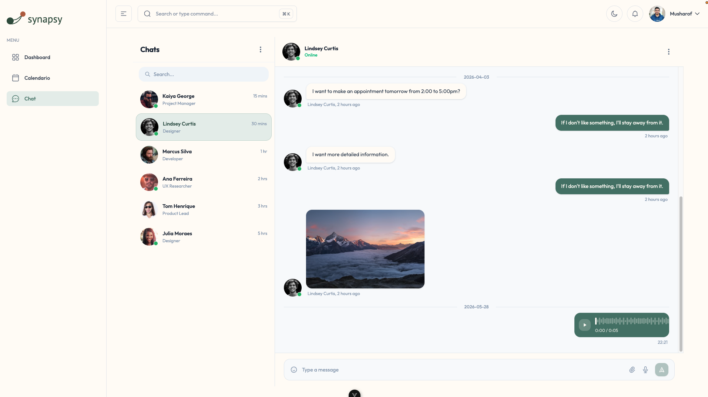

001
Plataforma de conversação assíncrona
SaaS para profissionais autônomos realizarem sessões de texto assíncronas com seus clientes. Janelas de agendamento semanais, modelo de resposta em 24 horas, gravação de áudio e trilha de conteúdo integrada.

Decisões de Arquitetura
- Mapa de conversação é o modelo central do sistema — cada mensagem tem um timestamp, uma referência ao cliente e à sessão, e um status de resposta. Isso mantém o histórico de cada conversa em ordem cronológica, preserva o contexto de cada conversa.
- Gravadção de áudio com botão de "pressione e solte" — sem dependência com bibliotecas de terceiros, controle total no armazenamento de dados BLOB
Estrutura do produto
- Módulo Chat Assíoncrono
- ódulo Dashboard — view consolidada de todos os clientes ativos